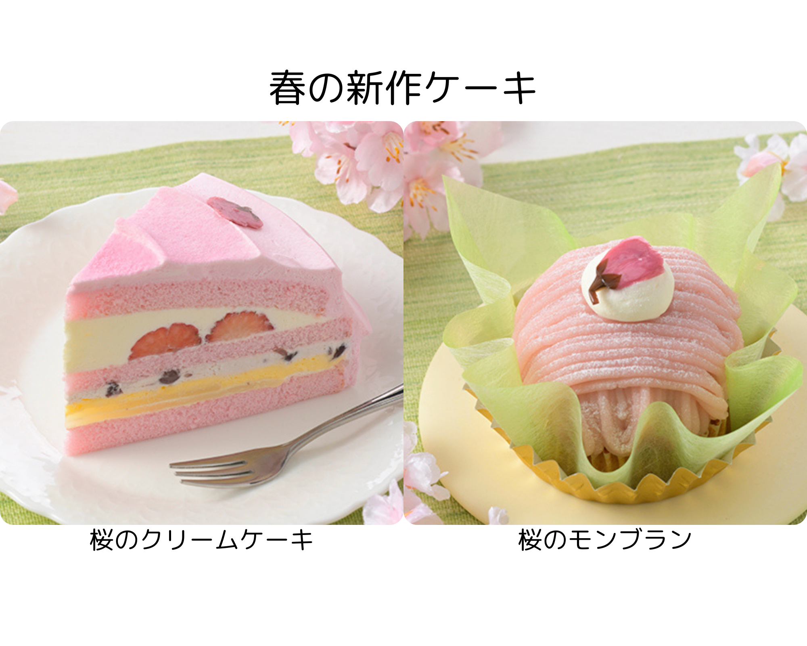

春爛漫！4月の新作ケーキのご案内
3/30 2025
カテゴリー：ケーキ

皆様、こんにちは！桜の季節がやってまいりました。街中が淡いピンク色に染まるこの美しい季節に、当店でも春の訪れを感じていただけるような特別な新作ケーキを2種類ご用意いたしました。
「桜のクリームケーキ」 ふわふわのスポンジケーキに、上品な甘さの桜風味のクリームをたっぷりとサンドしました。上部には季節限定の桜の花を散りばめ、見た目にも春らしい華やかさを演出しています。 桜の葉のほのかな香りが口の中に広がり、春の訪れを感じさせる一品です。桜の塩漬けを生地に練り込んでいるので、甘さの中にほんのりとした塩味が絶妙なアクセントになっています。 お花見のお供にはもちろん、春の贈り物やご家族でのティータイムにもぴったりです。 「桜のモンブラン」 定番のモンブランを春らしくアレンジした特別バージョンです。桜の風味を閉じ込めたなめらかなクリームを、モンブラン特有の細い線状に絞り、まるで桜色の山のような美しい仕上がりになっています。 中には桜あんと生クリームを忍ばせ、口に含むと様々な食感と風味が楽しめる贅沢な味わいです。桜の香りと栗の風味が絶妙に調和し、春ならではの特別なスイーツ体験をお届けします。
当店オリジナルの桜茶と一緒にお召し上がりいただくと、より一層春の香りを楽しんでいただけます。